Home
|
Gallery
|
About
|
Contact
Filters:
Categories:
Abstract Art
All
Featured
Graphic Design
Illistrations
Dates:
2016
2015
2014
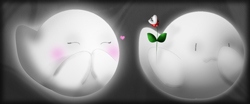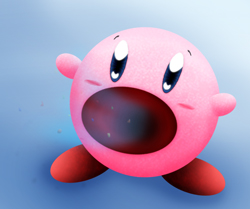Kirby a character starring in various Nintendo."/>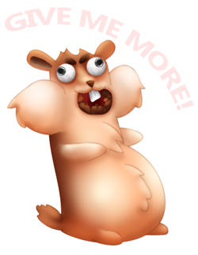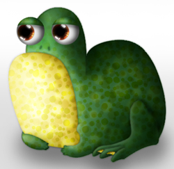Time Spent: 3 hours."/>
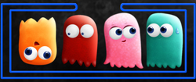
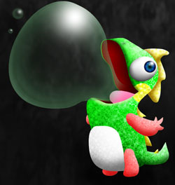Bubblun from
Bubble Bobble
, an amazing old game I grew up on."/>
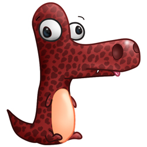Time Spent: 1 hour."/>
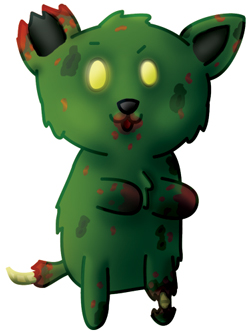Time spent: 1 hour."/>


 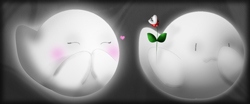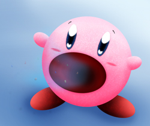Kirby a character starring in various Nintendo."/>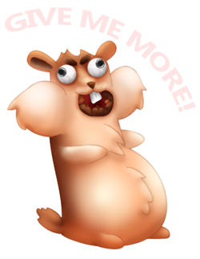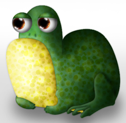Time Spent: 3 hours."/>
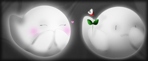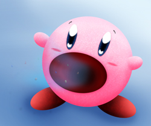Kirby a character starring in various Nintendo."/>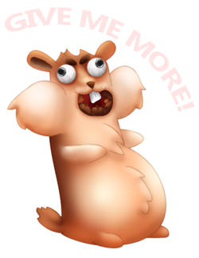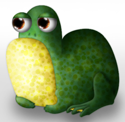Time Spent: 3 hours."/> 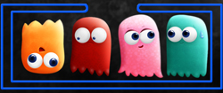
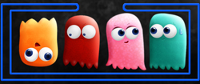 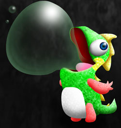Bubblun from Bubble Bobble, an amazing old game I grew up on."/>
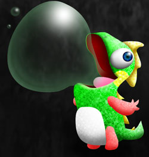Bubblun from Bubble Bobble, an amazing old game I grew up on."/>
 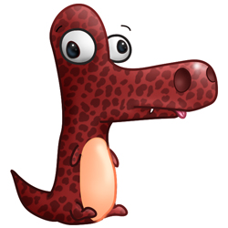Time Spent: 1 hour."/>
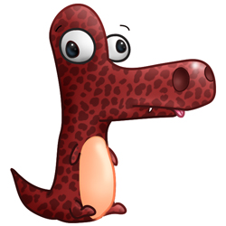Time Spent: 1 hour."/> 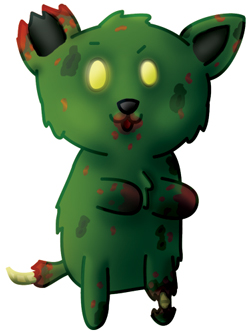Time spent: 1 hour."/>
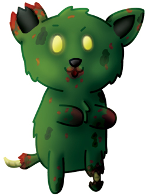Time spent: 1 hour."/>